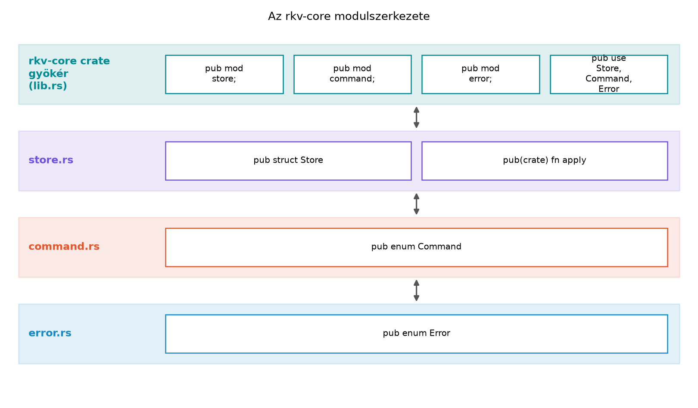

Egy tipikus C++-projektben egy új típushoz legalább két fájl
tartozik: a store.hpp deklarációval, include guarddal vagy
#pragma once-szal, és a store.cpp
definícióval. A headerben ügyelni kell arra, hogy csak teljes típusokra
mutató okos pointerek és referenciák szerepeljenek, ha el akarjuk
kerülni a fölösleges include-okat; a ciklikus függőséghez előre
deklaráció kell; a namespace rkv_core nyitó-záró blokkok
pedig vizuálisan növelik a zajt. A helyes include-sorrend, a rejtett
ODR-hiba és a sablonok headerbe kényszerítése mind a fejlesztő
terhe.
A Rust ezt a problémát nyelvi szinten eltávolítja: nincs
header, nincs include guard, és nincs külön deklarációs és definíciós
fázis. A modulrendszer a crate-en belül hierarchikusan rendezi
a kódot, a láthatóságot pedig a pub kulcsszó és a
modulhatárok szabályozzák. A névterek szerepét maguk a modulok töltik
be, de a láthatóság alapértelmezése éppen fordított, mint C++-ban: ami
pub, az publikus, minden más privát.
Definíció (modul). A modul a Rust szervezési
egysége: típusokat, függvényeket, konstansokat és más modulokat
tartalmazó névtér. A modulok a mod kulcsszóval jönnek
létre, és fizikailag fájlba vagy könyvtárba szervezhetők.
Definíció (crate gyökér). Minden crate-nek egyetlen
gyökere van: könyvtári crate-nél a src/lib.rs, bináris
crate-nél a src/main.rs. Ez a gyökér jelenti a
modulhierarchia tetejét; a crate:: útvonal innen indul.
Szabály (privát alapértelmezés). Ha egy elem –
modul, típus, mező, függvény – elé nem írunk pub-ot, akkor
az az adott modulban és annak leszármazott moduljaiban látható, más
modulok számára nem.
Szabály (gyermekmodul hozzáférése). A gyermekmodul látja a szülő privát elemeit is; a privát határ nem a fájlok, hanem a modulok között húzódik. A szülő modul viszont nem látja a gyermekmodul privát elemeit.
Szabály (fordítási egység = crate). A Rust-fordító a
crate-et fordítja le; a modulokra bontás nem hoz létre külön fordítási
egységet. A use nem szúr be kódot, mint a
#include, hanem csak rövidített elérési utat vezet be.
Ennek következménye, hogy a modulok sorrendje és a fájlok közötti
függőség nem befolyásolja a deklarációk elérhetőségét – a teljes crate
„egyszerre” látható a fordító számára.
A láthatósági szintek:
pub – mindenki számára látható, a crate-en kívül
is;pub(crate) – csak az aktuális crate-en belül
látható;pub(super) – csak a szülőmodulban látható;pub(in path) – csak a megadott modulútvonalon belül
látható;A use és a pub use közötti különbség
kulcsfontosságú: a use store::Store; csak a jelenlegi
modulban hozza létre a rövid nevet, míg a
pub use store::Store; a nevet a modul API-jának részeként
kifelé is elérhetővé teszi. Ez utóbbit
újraexportálásnak (re-exportnak) nevezzük, és az
idiomatikus Rust gyakran így takarja el a belső modulszerkezetet.
A C++-oldalon a névtér és a header gondoskodik a szervezésről:
// store.hpp
#pragma once
#include <string>
#include <unordered_map>
namespace rkv_core {
class Store {
public:
void set(const std::string& key, const std::string& value);
private:
std::unordered_map<std::string, std::string> data_;
};
}A Rust-megfelelő egy modulfájl, amelyben a láthatóság minden elemnél explicit:
// src/store.rs
use std::collections::HashMap;
pub struct Store {
data: HashMap<String, String>,
}
impl Store {
pub fn set(&mut self, key: String, value: String) {
self.data.insert(key, value);
}
}A legfontosabb különbség: a Rust-kódban a Store típus
pub, ezért a crate-en kívül is elérhető; a
data mező viszont privát, ezért kívülről nem lehet
közvetlenül elérni. A C++ private: szakasz helyett itt a
mező előtti pub hiánya jelzi ugyanezt. A Rust névtér nem
zárójel-párral, hanem a modulhatárokkal jön létre, és nem kell külön
header és forrásfájl közötti deklaráció-egyezést karbantartani.
A pub(crate) tipikus belső API-khoz való: olyan
segédfüggvényhez, amelyet a crate más moduljai használnak, de a könyvtár
felhasználója nem hívhat:
// src/store.rs
impl Store {
// A CLI-n és a szerveren belül használjuk, de külső crate-ből nem látható.
pub(crate) fn apply(&mut self, cmd: &crate::command::Command) -> Result<(), crate::error::Error> {
// ...
}
}A use szintaxisa hasonlít a C++ using-ra,
de nem hoz létre másolatot vagy láthatósági összefonódást:
using rkv_core::Store; // C++: név bevezetéseuse crate::store::Store; // Rust: rövid név bevezetéseMunkakönyvtár: ~/rust-labor/rkv/
A laborban az rkv-core könyvtárat bontjuk három modulra:
store, command és error. A
korábbi alfejezetekben a típusnevek és a választott értéktípus rögzítve
van; a kulcs String, az érték String. Most
csak a szerkezetet és a láthatóságot rendezzük.
Ha az rkv-core még nem létezik, hozzuk létre a
workspace-ben. Feltételezzük, hogy a workspace már létezik az rkv mintaprojekt indítása alapján; ha nem, a
cargo new --lib rkv-core paranccsal pótoljuk, és vegyük fel
a members listába.
A src/lib.rs tartalma a moduldeklaráció:
// rkv-core/src/lib.rs
pub mod command;
pub mod error;
pub mod store;
pub use command::Command;
pub use error::Error;
pub use store::Store;A pub mod sorok azt mondják a fordítónak, hogy a modulok
a crate gyökere alatt léteznek, és kifelé is láthatók. A
pub use sorok a gyakran használt típusokat a crate
gyökerébe emelik; így a külső kód rkv_core::Store néven éri
el őket, nem rkv_core::store::Store néven.
A src/command.rs a szöveges protokoll parancsait
határozza meg:
// rkv-core/src/command.rs
/// A tároló szöveges protokolljából származó parancs.
#[derive(Debug, Clone, PartialEq, Eq)]
pub enum Command {
Get(String),
Set(String, String),
Delete(String),
List(Option<String>),
}A String kulcs és String érték a Structok és metódusok alfejezet döntése; a
List(Option<String>) a
LIST [<prefix>] opcionális prefixét modellezi.
A src/error.rs egyelőre egy minimalista hibaséma,
amelyet a Saját hibatípusok alfejezet bővít
tovább:
// rkv-core/src/error.rs
use std::fmt;
/// Az rkv-core hibáinak közös típusa.
#[derive(Debug)]
pub enum Error {
KeyNotFound,
Io(std::io::Error),
}
impl fmt::Display for Error {
fn fmt(&self, f: &mut fmt::Formatter<'_>) -> fmt::Result {
match self {
Error::KeyNotFound => write!(f, "kulcs nem található"),
Error::Io(e) => write!(f, "I/O hiba: {e}"),
}
}
}A src/store.rs a tároló típusát és egy belső
apply metódust tartalmaz:
// rkv-core/src/store.rs
use std::collections::HashMap;
use crate::command::Command;
use crate::error::Error;
/// Kulcs-érték tároló memóriában.
///
/// A `data` mező privát: a külső kód csak a publikus API-n keresztül férhet hozzá.
#[derive(Debug, Default)]
pub struct Store {
data: HashMap<String, String>,
}
impl Store {
/// Üres tároló létrehozása.
pub fn new() -> Self {
Self {
data: HashMap::new(),
}
}
/// Parancs alkalmazása.
///
/// Ez a függvény `pub(crate)`: a workspace többi crate-je (például `rkv-cli`)
/// nem láthatja, csak az `rkv-core` belső moduljai használhatják.
pub(crate) fn apply(&mut self, cmd: &Command) -> Result<(), Error> {
match cmd {
Command::Get(key) => {
self.data.get(key).ok_or(Error::KeyNotFound)?;
Ok(())
}
Command::Set(key, value) => {
self.data.insert(key.clone(), value.clone());
Ok(())
}
Command::Delete(key) => {
self.data.remove(key).ok_or(Error::KeyNotFound)?;
Ok(())
}
Command::List(_prefix) => Ok(()),
}
}
}A pub(crate) választás szándékos: a parancs-alkalmazás
később a Trait-ek és generikusok alfejezetben
egy Storage trait mögé kerül, és addig is belső részletként
kezeljük. A Store típus és a new() konstruktor
publikus, a data mező privát.
cd ~/rust-labor/rkv
cargo build -p rkv-coreVárt kimenet (rövidítve, a pontos üzenet verziófüggő):
Compiling rkv-core v0.1.0 (~/rust-labor/rkv/rkv-core)
Finished dev profile [unoptimized + debuginfo] target(s) in 0.48sA modulok láthatóságát egy külső crate-ből érdemes ellenőrizni. Az
rkv-cli később fogja használni; most egy ideiglenes
examples/ fájlban is kipróbálhatjuk, hogy a re-export
működik:
// rkv-core/examples/use_core.rs
use rkv_core::Store;
fn main() {
let mut store = Store::new();
// A data mező itt nem érhető el: privát.
// println!("{:?}", store.data); // fordítási hiba
println!("Store létrehozva: {store:?}");
}Futtatás:
cargo run -p rkv-core --example use_coreVárt kimenet:
Store létrehozva: Store { data: {} }Ha a store.data sort visszatesszük, a fordító a privát
mező elérését jelzi (E0616, „field data of struct
Store is private”). Ezt a hibát a Tipikus hibák részben is elemezzük.
error[E0616]: field `data` of struct `Store` is private
A rétegábra azt mutatja, hogy a külső crate-ek a lib.rs
re-exportjain keresztül érik el a típusokat; a modulok közötti belső
kapcsolatot a use crate::command::Command és
use crate::error::Error útvonalak adják.
Továbbvitt eredmény. Ez a store,
command és error modulokra épülő szerkezet az
alapja a Saját hibatípusok: enum-hibák, thiserror,
anyhow alfejezet Error bővítésének; a Trait-ek és generikusok alfejezet itt vezeti be a
Storage traitet a Store fölé; a Unit-, integrációs és dokumentációs tesztek
alfejezet pedig ezeket a modulokat teszteli külön fájlokban.
Minden pub C++-os beidegződésből. A
C++ public: osztályszakaszhoz szokott fejlesztő gyakran
minden mezőt és metódust pub-ra állít, hogy „majd később
elrejti”. Ezzel azonban a Rust éppen a fő előnyét veszíti el: a privát
adat invariánsát a fordító kényszeríti ki. A helyes stratégia: kezdetben
minden privát, és csak a valóban szükséges elem kapjon
pub-ot. A pub(crate) a belső használatra
való.
A use és a #include
összemosása. A C++ #include a fájlt szó szerint
beszúrja, és a sorrend befolyásolhatja a fordítást. A Rust
use pusztán rövidítés: ha a use-t elhagyjuk, a
teljes útvonal (crate::store::Store) ugyanúgy működik.
Nincs szükség include guardra, és a modulok sorrendje sem számít – a
fordító a crate minden modulját egyszerre látja.
A moduldeklaráció hiánya. Ha létrehozzuk a
store.rs fájlt, de a lib.rs-be nem írjuk be a
mod store; sort, a fordító hibát ad: „file not found for
module store”. A fájl önmagában nem modul; csak a
mod deklaráció hozza létre.
Re-export nélküli, mélyen tagolt API. Ha a külső
kód minden típust a teljes útvonalon
(rkv_core::store::Store) kénytelen elérni, a belső
átszervezés minden felhasználót megtör. Az idiomatikus megoldás a
pub use a crate gyökerében: a felhasználó a stabil
rkv_core::Store nevet látja, a belső modulok pedig szabadon
mozgathatók.
Adott a következő kód:
mod service {
pub struct Config {
pub(crate) timeout_ms: u64,
}
pub fn create_config() -> Config {
Config { timeout_ms: 1000 }
}
}
fn main() {
let cfg = service::create_config();
println!("{}", cfg.timeout_ms);
}Fordul-e a kód? Magyarázd el, hogy a pub(crate)
láthatóság mit enged meg ebben a bináris crate-ben, és mi lenne a
helyzet, ha a pub(crate) helyett pub(super)
állna?
Alakítsd át a következő C++ fejlécet egyetlen Rust modullá
(src/message.rs), ügyelve a láthatóságra és a privát
alapértelmezésre:
#pragma once
#include <string>
namespace mail {
class Message {
public:
explicit Message(std::string body);
const std::string& body() const;
private:
std::string body_;
};
}A modul legyen pub, a típus pub, a mező
privát. A body() visszatérési típusa Rustban
&str legyen.
Az rkv-core/src/command.rs fájlban hozz létre egy
pub fn parse(line: &str) -> Result<Command, crate::error::Error>
függvényt, amely a szöveges protokoll egy sorát értelmezi. A
SET parancsnál a kulcs és az érték szóközzel elválasztva
érkezik; ha az érték hiányzik, adj vissza egy új
Error::Parse variánst. A GET és
DEL egyetlen kulcsot vár, a LIST opcionális
prefixet. A függvényt a store.rs-ben lévő
apply későbbi implementációja fogja használni; ez
előkészíti a Storage trait bevezetését.
A következő kis crate nem fordul. Javítsd a kódot úgy, hogy a
main.rs hozzáférjen a Store típushoz a
gyökérből (demo::Store néven), a data mező
viszont maradjon privát.
// src/lib.rs
mod store {
pub struct Store {
data: Vec<u8>,
}
impl Store {
pub fn new() -> Self {
Store { data: Vec::new() }
}
}
}
// src/main.rs
fn main() {
let s = demo::Store::new();
println!("{:?}", s.data);
}A kód lefordul. A pub(crate) láthatóság a teljes
aktuális crate-en belül érvényes, tehát a main függvény
(amely ugyanabban a bináris crate-ben van) eléri a
timeout_ms mezőt. Ha pub(super) állna, a mező
csak a service modul szülőjében, azaz a crate gyökerében
lenne látható – mivel a main a crate gyökerében van, az is
működne. Ha viszont a service modul egy gyermekmodulban
lenne, a pub(super) már nem engedné a hozzáférést a
gyermekmodulból.
// src/message.rs
pub struct Message {
body: String,
}
impl Message {
pub fn new(body: String) -> Self {
Self { body }
}
pub fn body(&self) -> &str {
&self.body
}
}A moduldeklaráció a lib.rs-ben:
pub mod message;. A body mező privát, a
body() metódus publikusan ad olvasási hozzáférést.
Az error.rs bővítése:
// rkv-core/src/error.rs
pub enum Error {
KeyNotFound,
Parse(String),
Io(std::io::Error),
}A Display implementációban a Parse variánst
is kezelni kell:
Error::Parse(msg) => write!(f, "értelmezési hiba: {msg}"),A command.rs új függvénye:
// rkv-core/src/command.rs
use crate::error::Error;
pub fn parse(line: &str) -> Result<Command, Error> {
let mut parts = line.split_whitespace();
match parts.next() {
Some("GET") => parts
.next()
.map(|key| Command::Get(key.to_string()))
.ok_or_else(|| Error::Parse("GET kulcs nélkül".into())),
Some("SET") => {
let key = parts
.next()
.ok_or_else(|| Error::Parse("SET kulcs nélkül".into()))?;
let value = parts
.next()
.ok_or_else(|| Error::Parse("SET érték nélkül".into()))?;
Ok(Command::Set(key.to_string(), value.to_string()))
}
Some("DEL") => parts
.next()
.map(|key| Command::Delete(key.to_string()))
.ok_or_else(|| Error::Parse("DEL kulcs nélkül".into())),
Some("LIST") => Ok(Command::List(parts.next().map(|s| s.to_string()))),
_ => Err(Error::Parse("ismeretlen parancs".into())),
}
}Ez a függvény pub, tehát kívülről is hívható; a későbbi
Storage trait implementációja is erre építhet.
A hiba oka: a store modul mod (privát)
deklarációval jön létre, és a típus nincs re-exportálva a gyökérbe.
Javítás:
// src/lib.rs
pub mod store {
pub struct Store {
data: Vec<u8>,
}
impl Store {
pub fn new() -> Self {
Store { data: Vec::new() }
}
}
}
pub use store::Store;A pub use után a demo::Store név a crate
gyökerében elérhető. A data mező továbbra is privát, így a
main.rs-ben a println!("{:?}", s.data); sor
továbbra is hibát ad; ezt a sort el kell távolítani, vagy egy publikus
gettert kell bevezetni.
A Rust modulrendszer header és include guard nélkül szervezi a kódot.
A crate gyökere a lib.rs vagy main.rs; a
mod deklaráció hozza létre a modulnévtérben a
store, command és error
egységeket. A láthatóság alapértelmezése privát; a pub
kifelé, a pub(crate) a crate-en belül tesz elérhetővé, a
pub(super) a szülőmodulra korlátoz. A use
rövidített útvonal, a pub use újraexportálja a nevet a
modul API-jába; ezért a külső kód rkv_core::Store,
rkv_core::Command és rkv_core::Error néven éri
el a típusokat. Az rkv-core moduljai: store.rs
(Store, pub(crate) fn apply),
command.rs (Command), error.rs
(Error). Továbbvitt eredmény: ez a
modulszerkezet az alapja a Saját hibatípusok, a
Trait-ek és generikusok és a Tesztelés alfejezeteknek.
A modulrendszer és a láthatósági szabályok a Rust Reference és a The
Rust Programming Language stabil, jól dokumentált részei. A példákban
használt cargo build kimenetek pontos szövege, a hibakódok
és az edition-különbségek a telepített toolchain verziójától függenek;
ezt a hivatalos rustc --explain és a Cargo dokumentáció
alapján ellenőrizni kell. A 2024-es edition elérhetősége a stable
toolchain verziójától függ; ha nem elérhető, a példák 2021-es editionnel
is azonos módon működnek.